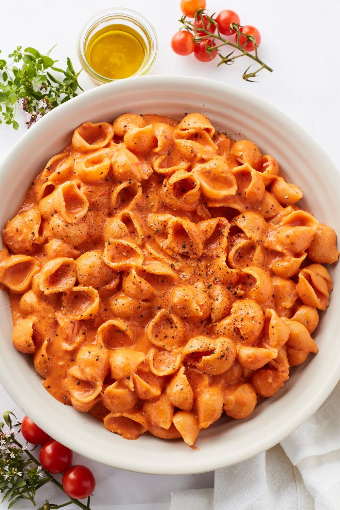

Beschrijving
een perfect pasta recept om snel klaar te maken
Ingrediënten
- 500 gr pasta naar keuze
- 400 gr kerstomaten
- 1 blik tomatenblokjes (400 g)
- 2 l tomatenpuree
- 3 teentjes look
- 1 witte ui
- 1 l gedroogde oregano
- snuifje chiliflakes
- 2 l honing
- 60 gr Parmezaanse kaas (van een blok)
- 200 gr mascarpone
- olijfolie
- peper - zout
Instructies
- Snijd de ui en look fijn. Stoof ze aan in een scheutje olijfolie in een (diepe) braadpan.
- Kruid met peper, zout, oregano en chiliflakes. Voeg een beetje basilicumolie toe. Snijd de kerstomaatjes in tweeën en stoof ze mee aan. Roer de tomatenpuree erdoor. Breng extra op smaak met de honing. Blus met de tomatenblokjes.
- Laat alles even op een laag vuur sudderen. Kook ondertussen de pasta volgens de verpakking en bewaar zeker 1 à 2 dl kookvocht. Meng de mascarpone onder de saus. Wanneer alles goed gemengd is, mix je het geheel met de staafmixer tot een gladde saus. Meng de pasta onder de saus.
- Voeg als laatste nog het kookvocht en de Parmezaanse kaas toe. Blijf roeren tot je een romig geheel krijgt.